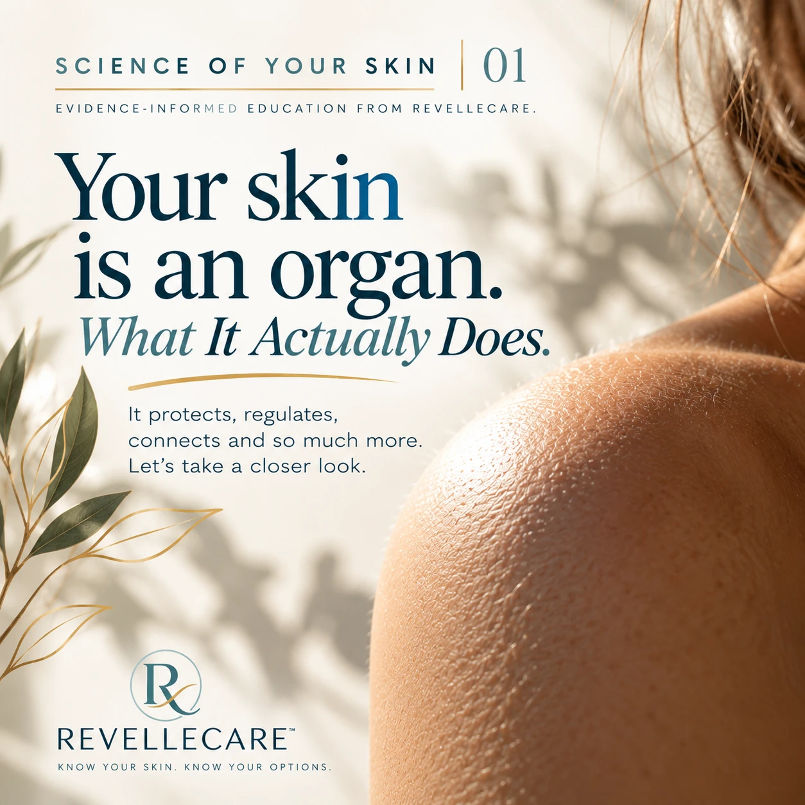

Science of Your Skin · Issue 01
Your Skin Is an Organ:
What It Actually Does

When we think about our organs, we usually picture the heart, lungs or brain. But there's one organ we often overlook because we see it every day: our skin.
In fact, your skin is the largest organ in your body. Covering nearly two square metres in the average adult, it works around the clock to protect you, regulate your temperature and help you interact with the world around you.
More Than Just a Surface
Your skin does much more than determine how you look.
Every day it:
- Protects you from bacteria, viruses and environmental pollutants
- Helps prevent water loss so your body stays hydrated
- Regulates body temperature through sweat and blood flow
- Allows you to feel heat, cold, pressure and pain
- Plays an important role in your immune system
- Produces vitamin D when exposed to sunlight
Your skin is constantly working – even while you sleep.
A Living, Changing Organ
Unlike many people think, your skin isn't static. It's continually renewing itself.
New skin cells are produced deep within the skin and gradually move toward the surface, where older cells are naturally shed. This renewal process slows as we age, and hormonal changes, sun exposure, illness and lifestyle factors can all influence how healthy our skin looks and feels.
Why It Matters
Healthy skin isn't simply about appearance – it's an important part of overall health.
Understanding how your skin functions helps explain why changes such as dryness, pigmentation, sensitivity or loss of firmness occur. When we understand what's happening beneath the surface, we can make more informed decisions about caring for our skin.
Myth vs. Fact
Myth: Skin is simply a protective covering.
Fact: Your skin is a complex organ with essential roles in protection, immunity, temperature regulation and sensation.
Takeaway
Healthy skin begins with understanding your skin. The more you know about how it works, the better equipped you are to care for it throughout every stage of life.
Science of Your Skin – Evidence-informed education from RevelleCare.
Our Commitment to Evidence-Based Education
The information in this article is intended for educational purposes and is based on current scientific evidence from respected medical organizations and peer-reviewed research. It is not intended to replace personalized medical advice. If you have concerns about your skin or overall health, speak with a qualified healthcare professional.
Sources & Further Reading
- Cleveland Clinic. Skin: Layers, Structure and Function. Explains the skin as the body's largest organ and its roles in protection, sensation, temperature regulation and immune function.
- American Academy of Dermatology. Caring for your skin in menopause. Educational resources on skin health, healthy skin practices and skin biology.
- Hall G, Phillips TJ. Estrogen and skin: the effects of estrogen, menopause, and hormone replacement therapy on the skin. Journal of the American Academy of Dermatology, 2005;53(4):555–568. Reviews the biology of healthy skin, estrogen receptors in skin, collagen, hydration and wound healing.